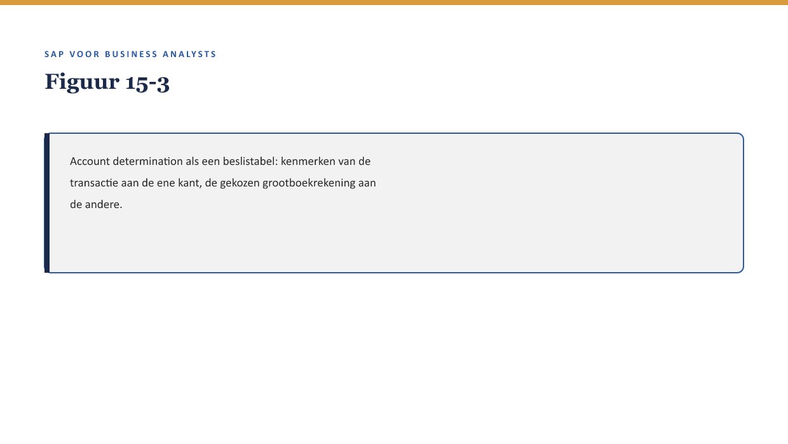

Cursus SAP voor Business Analysts · Niveau 2 (Professional) · Deel 15 van 30
De financiële schaduw van elk proces
Sanne heeft nu FS-PM (deel 11-12) en FS-CM (deel 13-14) leren kennen als procesmodules. Priya trekt de aandacht op iets dat tot nu toe op de achtergrond bleef: “Elke BTX, elke claim — ze hebben allemaal een financiële schaduw. Een boeking die ergens moet landen, op de juiste rekening, op het juiste moment.”
11secties
±30minleestijd + werkboek
6werkboekopdrachten
3figuren
Positionering. Deze Ductus-opleiding leert business analisten SAP zelfstandig lezen en beoordelen in een SAP-implementatietraject — geen configuratie- of programmeercursus, wel de vaardigheid om een consultant en ontwikkelaar te kunnen tegenspreken. Dit materiaal is onafhankelijk ontwikkeld door Ductus B.V. en niet gelieerd aan of goedgekeurd door SAP SE.
Niveau 2: Deel 11 — FS-PM: het polisproces → Deel 12 — FS-PM: configuratie en rolverdeling → Deel 13 — FS-CM: het schadeproces I → Deel 14 — FS-CM: het schadeproces II → Deel 15 — De financiële schaduw van elk proces (hier) → Deel 16 — Documenten & documentflow → Deel 17 — Organisatiestructuur & determinatie → Deel 18 — Status, berichten & output → Deel 19 — Case: Order-to-Cash ontleed → Deel 20 — Case: Claims-to-Payment ontleed → Deel 21 — Ketenintegratie: polis, claim en financiën samen → Deel 22 — Examentraining + capstone
01
Leerdoelen
⏱ 3 min
Na dit deel kun je:
de FS-CD-keten beschrijven: hoe premie-incasso en uitkeringen technisch worden verwerkt en doorgeboekt;
de Universal Journal (↗ deel 1 §4.1) uitleggen als het datamodel waarin S/4HANA financiële boekingen samenbrengt;
account determination op hoofdlijnen benoemen: hoe het systeem bepaalt welke grootboekrekening bij welke transactie hoort;
de eerste IFRS17/FPSL-lens toepassen: wat verandert er in de boeking, niet alleen in het proces;
een stamgegevensfout (↗ deel 4) herkennen als deze zich via account determination financieel manifesteert.
Studielast: één dagdeel klassikaal, circa drie uur zelfstudie.
02
Elk proces heeft een schaduw
⏱ 3 min
Sanne heeft nu FS-PM (deel 11-12) en FS-CM (deel 13-14) leren kennen als procesmodules. Priya trekt de aandacht op iets dat tot nu toe op de achtergrond bleef: “Elke BTX, elke claim — ze hebben allemaal een financiële schaduw. Een boeking die ergens moet landen, op de juiste rekening, op het juiste moment.”
Figuur 15-1 — Een BTX en een claim, elk met een schaduw die naar de financiële laag (FS-CD, Accounting) reikt.
03
Waarom dit voor de BA telt
⏱ 3 min
Waarom dit voor de BA telt
Een procesontwerp dat functioneel klopt maar financieel niet goed doorwerkt, is geen goed procesontwerp. Een BA die alleen het polis- of schadeproces beoordeelt zonder de financiële schaduw mee te nemen, mist een deel van wat een consultant en een financeconsultant samen moeten kunnen beantwoorden.
04
FS-CD: de keten die geld verwerkt
⏱ 3 min
FS-CD (↗ deel 1 §3.1) verwerkt zowel premie-incasso als uitkeringen (deel 14 §3): een generieke inningen-en-uitbetalingenmotor, gebouwd voor de schaal en frequentie van de financiële sector. Voor een BA is het relevant te weten dat FS-CD een eigen keten is tussen het procesmoment (een BTX of een claim) en de uiteindelijke boeking — niet een directe, ongefilterde doorgifte.
Figuur 15-2 — De FS-CD-keten: procesmoment → FS-CD-verwerking → boeking, met FS-CD als tussenlaag die valideert, groepeert en plant.
05
De Universal Journal
⏱ 3 min
In S/4HANA komen financiële boekingen samen in de Universal Journal — één datamodel waarin gegevens die in ECC over meerdere losse tabellen verspreid lagen, worden samengebracht. Voor een BA is het praktische gevolg vooral zichtbaar in rapportage (↗ deel 8): sneller, flexibeler inzicht, omdat er niet meer tussen verschillende tabellen hoeft te worden geschakeld om een compleet financieel beeld te krijgen.
Kernzin
De Universal Journal is een concept dat een technische verbetering vertegenwoordigt (↗ deel 1 §4.1), maar wat een BA er praktisch van merkt, zit vooral in hoe snel en compleet een financiële vraag te beantwoorden is — niet in de onderliggende technologie zelf.
06
Account determination: hoe het systeem een rekening kiest
⏱ 3 min
Account determination is het mechanisme waarmee het systeem, op basis van kenmerken van een transactie (productvariant, type BTX, type claim), automatisch bepaalt naar welke grootboekrekening een boeking moet gaan. Dit is een vorm van bedrijfsregel (↗ deel 5-6, niveau 1) die meestal in configuratie (vergelijkbaar met BRFplus-achtige logica, ↗ deel 12) is vastgelegd.

Figuur 15-3 — Account determination als een beslistabel: kenmerken van de transactie aan de ene kant, de gekozen grootboekrekening aan de andere.
Waarom een stamgegevensfout hier financieel zichtbaar wordt
Als een stamgegeven (↗ deel 4) onjuist of dubbel is — bijvoorbeeld de werkgever die twee keer bestond — kan account determination een verkeerde of inconsistente rekening kiezen, simpelweg omdat de kenmerken waarop de bepaling draait, niet eenduidig zijn. Dit is precies de “stilste bron”-les uit deel 4, nu financieel gemanifesteerd: het proces (de boeking) werkt technisch foutloos, en het resultaat klopt toch niet, omdat het startpunt niet klopte.
07
Eerste IFRS17/FPSL-lens: wat verandert er in de boeking
⏱ 3 min
Dit blok komt terug in deel 21 (tweede lens) en wordt samengebracht in deel 27 (samenvatting).
IFRS17 is de internationale verslaggevingsstandaard voor verzekeringscontracten; FPSL (Financial Products Subledger) is SAP’s technische ondersteuning daarvoor. Zonder in actuariële diepte te treden: het praktische gevolg voor een BA is dat de boekingslogica achter een polis of claim niet langer een eenvoudige, directe registratie is, maar rekening houdt met hoe de waarde van een verzekeringscontract over tijd wordt gemeten en gerapporteerd.
Kernzin
Waar deze cursus vroeger (in de v2.0-voorloper) vooral het procesmatige “wat gebeurt er” behandelde, voegt de IFRS17/FPSL-lens een tweede vraag toe die bij elk proces relevant is: wat betekent dit voor de boeking, en verandert de rapportagevraag van de business daardoor?
Voor Meridiaan betekent dit concreet: elke FS-PM- of FS-CM-procesbeslissing die in niveau 2 wordt genomen, verdient een korte toets — heeft dit een IFRS17/FPSL-implicatie die de finance-afdeling zou moeten weten? Deel 21 bouwt dit verder uit met de rapportagevraag-kant; deel 27 (niveau 3) brengt beide lenzen samen.
08
Kruisverwijzingen
⏱ 3 min
↗ Deel 1 §4.1: ECC/S/4HANA en de Universal Journal als vooruitblik.
↗ Deel 4: stamgegevensfouten, hier financieel gemanifesteerd via account determination.
↗ Deel 21: tweede IFRS17/FPSL-lens (rapportagevraag) en ketenintegratie.
↗ Deel 27, niveau 3: samenvattend IFRS17/FPSL-deel.
Elke BTX en elke claim heeft een financiële schaduw die via FS-CD naar Accounting reikt.
FS-CD is een eigen tussenlaag die valideert, groepeert en plant — geen directe doorgifte.
De Universal Journal brengt financiële boekingen samen in één datamodel; voor een BA vooral merkbaar in snellere, completere rapportage.
Account determination bepaalt automatisch de juiste grootboekrekening, en kan een stamgegevensfout financieel zichtbaar maken.
De eerste IFRS17/FPSL-lens vraagt bij elke procesbeslissing: wat betekent dit voor de boeking, en heeft finance dit nodig om te weten?
11
Werkboek — opdrachten
⏱ 5 min
Vijf opdrachten en een oefentoets van tien vragen.
Werkboekopdrachten
Uit Werkboek deel 15, letterlijk overgenomen (inclusief uitwerkingen)
Opdracht 15.1 — Waar zit de schaduw? (10 min, individueel)
Voor elke procesgebeurtenis: welke financiële schaduw hoort erbij?
a. Een nieuwe polis wordt afgesloten (New Business). b. Een claim wordt uitgekeerd.
✓UitwerkingToon antwoord
a. Toekomstige premie-incasso via FS-CD, uiteindelijk geboekt in Accounting. b. Een uitkeringsboeking via FS-CD naar Accounting (deel 14 §3).
Opdracht 15.2 — Universal Journal in de praktijk (10 min, individueel)
Leg uit waarom een financiële rapportagevraag (↗ deel 8) in S/4HANA doorgaans sneller te beantwoorden is dan in ECC, zonder de technische details van de Universal Journal te hoeven kennen.
✓UitwerkingToon antwoord
Omdat boekingsgegevens in S/4HANA in één samenhangend datamodel (de Universal Journal) samenkomen, in plaats van verspreid te liggen over meerdere losse tabellen zoals in ECC — waardoor minder schakelen tussen bronnen nodig is om een compleet beeld te krijgen (reader §4).
Opdracht 15.3 — Account determination en het werkgeversduplicaat (20 min, groepjes van drie)
Herlees deel 4 (het werkgeversduplicaat). Beschrijf hoe dit duplicaat, als het niet was opgelost, een probleem had kunnen veroorzaken bij account determination.
✓UitwerkingToon antwoord
Als premies of uitkeringen voor polissen van beide werkgeversrecords apart worden verwerkt, kan account determination — afhankelijk van welke kenmerken aan welk record hangen — inconsistente of verkeerde grootboekrekeningen kiezen, ook al is elke individuele boeking technisch correct uitgevoerd. Dit is precies de “stilste bron”-les uit deel 4 (reader §5.1), nu gemanifesteerd in de boekhouding.
Opdracht 15.4 — De IFRS17/FPSL-lens toepassen (15 min, individueel)
Kies een BTX-categorie uit deel 11 (bijvoorbeeld Termination) en formuleer één vraag die je aan de finance-afdeling zou stellen over de boekingsimplicatie ervan, met de lens uit reader §6.
✓Uitwerking — voorbeeldantwoordToon antwoord
“Als een polis wordt beëindigd (Termination), verandert dat de manier waarop de resterende waarde van dat contract onder IFRS17/FPSL wordt gerapporteerd — en zo ja, moet dat een directe boeking zijn of iets dat via een periodieke afsluiting wordt verwerkt?”
Opdracht 15.5 — Je eigen financiële schaduw (10 min, individueel, huiswerk)
Bedenk een proces uit je eigen werk (kan buiten SAP zijn) dat een financiële “schaduw” heeft die je niet meteen had overwogen. Beschrijf kort welke vraag je daarover zou willen stellen.
✓Uitwerking — begeleidingsnotitieToon antwoord
Geen vast antwoord; bespreek kort in de volgende sessie.
Oefentoets — tien vragen
1. Wat is FS-CD in dit verband? A. Een testtool. B. Een tussenlaag die premie en uitkeringen verwerkt vóór ze in Accounting landen. C. Een type BTX. D. Een rapportagetool.
2. Wat is de Universal Journal? A. Een testrapport. B. Het datamodel waarin S/4HANA financiële boekingen samenbrengt. C. Een type claim. D. Een BRFplus-regel.
3. Wat merkt een BA praktisch van de Universal Journal? A. Niets. B. Snellere, completere financiële rapportage. C. Alleen technische documentatie. D. Een ander wachtwoord.
4. Wat is account determination? A. Een testprocedure. B. Het mechanisme dat automatisch de juiste grootboekrekening bepaalt. C. Een type polis. D. Een BTX-categorie.
5. Hoe kan een stamgegevensfout financieel zichtbaar worden? A. Dat kan niet. B. Via account determination, die een verkeerde rekening kan kiezen bij niet-eenduidige kenmerken. C. Alleen via FS-PM, nooit via FS-CD. D. Alleen bij New Business.
6. Wat is IFRS17? A. Een SAP-module. B. De internationale verslaggevingsstandaard voor verzekeringscontracten. C. Een type transactiecode. D. Een testframework.
7. Wat is FPSL? A. Een fraudetool. B. SAP’s technische ondersteuning voor IFRS17 (Financial Products Subledger). C. Een type BTX. D. Een rapportagetaal.
8. Wat vraagt de eerste IFRS17/FPSL-lens? A. Niets, dit is puur actuarieel werk. B. Wat betekent een procesbeslissing voor de boeking, en heeft finance dit nodig om te weten? C. Alleen of de premie correct is. D. Of het systeem synchroon of asynchroon werkt.
9. Waar komt de tweede IFRS17/FPSL-lens terug? A. Nergens meer. B. Deel 21, met de rapportagevraag-kant. C. Alleen in niveau 1. D. In deel 8.
10. Wat is de relatie tussen FS-CD bij premie en bij uitkering? A. Twee aparte systemen. B. Hetzelfde mechanisme, twee richtingen — geld in en geld uit. C. FS-CD verwerkt alleen premie. D. Geen relatie.
✓AntwoordenToon antwoord
1B 2B 3B 4B 5B 6B 7B 8B 9B 10B
Verder naar deel 16
Deel 16 — Documenten & documentflow — bouwt voort op wat hier is behandeld.